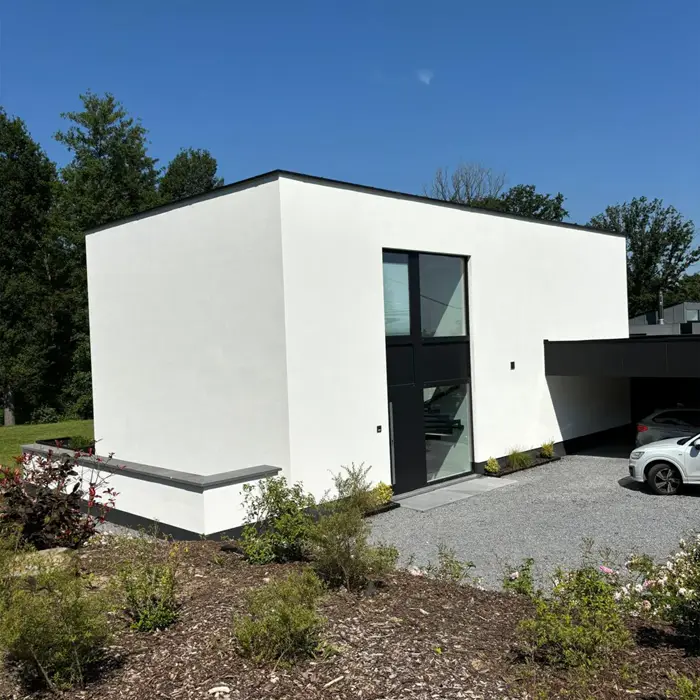

- Accueil
- Services
- Crépi de façade
Crépi et enduit de façade
Crépi de façade dans le Hainaut
Un crépi neuf protège vos murs de la pluie et du gel, et change complètement l'allure de votre maison. On prépare le support, on pose, on nettoie.

Ce qu'un bon crépi vous apporte
Des murs protégés
Le crépi fait barrière à la pluie battante et au gel, et protège la maçonnerie.
Le look que vous voulez
Teinte, texture, grain : on vous montre des échantillons avant de commencer.
Une finition qui dure
Un support bien préparé, c'est un crépi qui ne fissure pas et ne se décolle pas.
Peu d'entretien
Un crépi de qualité garde sa couleur et se nettoie facilement.
Comment on pose votre crépi
- 01Diagnostic
On contrôle l'état des murs : fissures, humidité, ancien enduit.
- 02Préparation
Nettoyage, réparations et protection des abords et des châssis.
- 03Couche de fond
Primaire d'accroche et, si nécessaire, sous-enduit armé.
- 04Crépi de finition
Application du crépi choisi, puis nettoyage complet du chantier.
Matériaux et détails
Ce qu'on utilise et ce que vous pouvez attendre.
- Types de crépi
- Adapté au support, conseillé à la visite
- Textures
- Plusieurs grains et finitions au choix
- Teintes
- Large nuancier, échantillons sur demande
- Autre finition
- Briquettes de parement
- Durée moyenne
- Indiquée dans le devis
- Garantie
- Garantie assurance selon le projet
Combien ça coûte ?
À partir de 80 €/m²
Le prix final dépend de :
- La surface à traiter
- L'état du support et les réparations
- Le type de crépi choisi
- Les détails (angles, encadrements, soubassement)
- L'accès et l'échafaudage
Questions fréquentes
Quel crépi choisir pour ma maison ?
Ça dépend du support et de l'exposition de la façade. On vous conseille le bon produit lors de la visite et on vous montre des échantillons.
Peut-on poser un crépi sur un ancien crépi ?
Souvent oui, si l'ancien enduit est sain et bien accroché. Sinon, on le retire ou on le renforce avant de poser le nouveau.
Combien de temps dure la pose ?
Ça dépend de la surface et de la météo. La durée prévue est indiquée dans le devis.
Combien de temps tient un crépi ?
Bien posé sur un support préparé, un crépi tient de nombreuses années.
Crépi de façade près de chez vous
Isoler aujourd'hui, économiser demain
Votre devis gratuit, sous 72 h.
Laissez vos coordonnées, on vous rappelle pour fixer la visite. Vous préférez parler tout de suite ? Appelez-nous.
0470 17 96 39